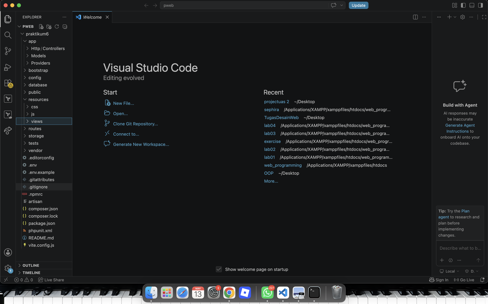
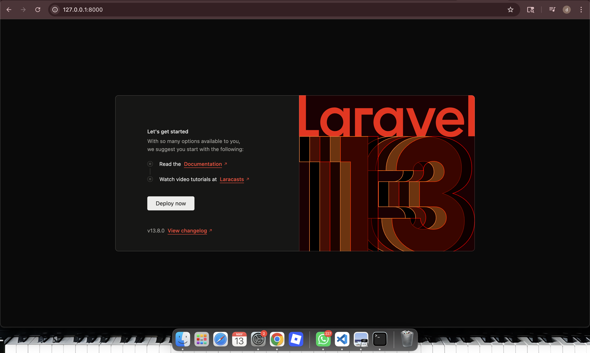
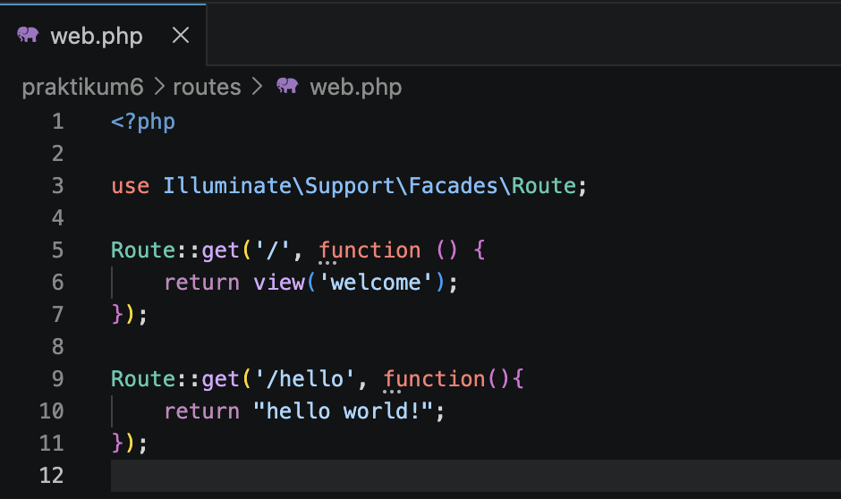
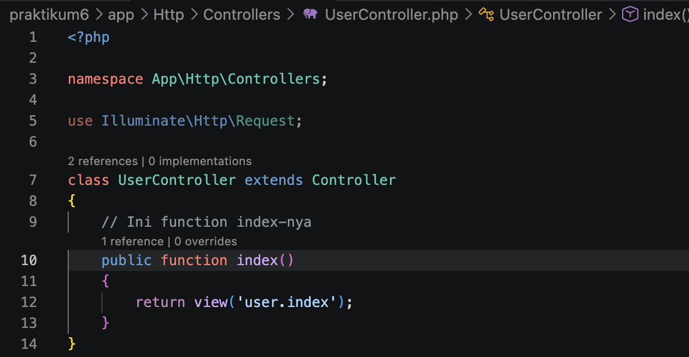
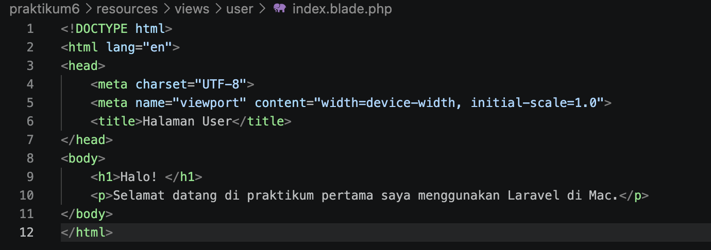
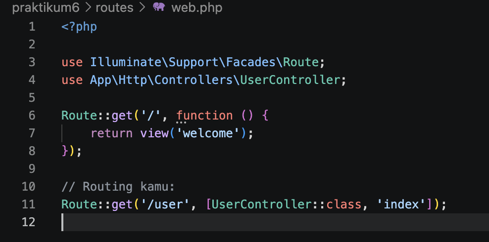
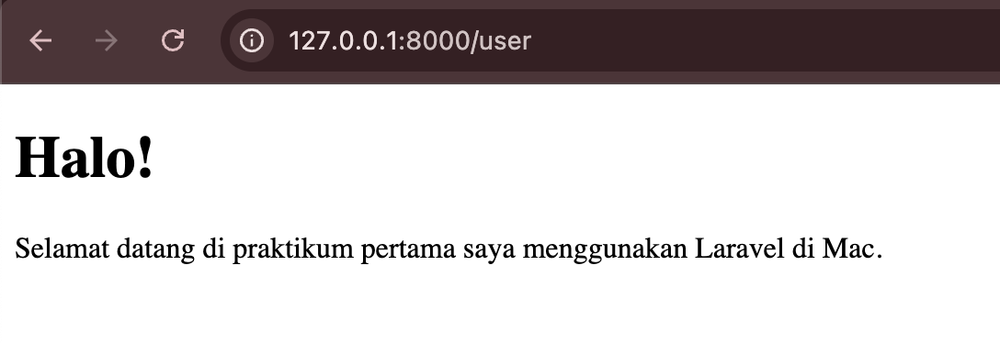

A. Pendahuluan
Laravel merupakan salah satu framework PHP yang sangat populer dan banyak digunakan oleh developer di seluruh dunia untuk membangun aplikasi berbasis web. Framework ini dikembangkan oleh Taylor Otwell sebagai proyek open-source yang mengedepankan efisiensi melalui arsitektur MVC (Model-View-Controller). Dengan arsitektur ini, pengembang dapat memisahkan logika utama aplikasi, pengelolaan data, dan antarmuka tampilan secara sistematis.
Beberapa fitur unggulan yang ditawarkan oleh Laravel meliputi Eloquent ORM yang memudahkan interaksi dengan basis data melalui sintaks PHP yang sederhana, serta Blade Templating Engine untuk menciptakan tampilan web yang dinamis namun tetap bersih. Selain itu, tersedia Artisan Console sebagai antarmuka baris perintah yang membantu otomatisasi tugas-tugas pengembangan seperti pembuatan controller dan migration.
Laravel juga sangat memperhatikan aspek keamanan dengan menyediakan fitur proteksi bawaan terhadap serangan CSRF, XSS, dan SQL Injection. Secara keseluruhan, penggunaan Laravel bertujuan untuk mempercepat siklus pengembangan perangkat lunak tanpa mengabaikan kualitas dan keamanan kode.
B. Tujuan
- Mampu melakukan instalasi framework Laravel pada sistem operasi yang digunakan.
- Mampu membuat project baru menggunakan Laravel.
- Mengenal dan memahami struktur folder di dalam Laravel serta konsep dasar MVC.
C. Langkah Kerja
Berikut adalah langkah-langkah yang telah dilakukan untuk menyiapkan lingkungan pengembangan di macOS dan membuat project Laravel.
1. Persiapan Lingkungan (Requirement Check)
Sebelum instalasi Laravel dilakukan, sistem dipastikan telah memenuhi requirement minimum Laravel 12 yaitu menggunakan PHP versi 8.2 atau lebih tinggi.
-
Melakukan update PHP ke versi terbaru menggunakan Homebrew.

-
Melakukan update Composer sebagai package manager Laravel.

-
Memastikan Node.js dan NPM telah terinstall untuk kebutuhan build asset UI.

2. Membuat Project Baru
Setelah semua requirement terpenuhi, langkah berikutnya adalah membuat project Laravel baru melalui terminal menggunakan Composer.
-
Membuka terminal dan membuat direktori kerja baru menggunakan perintah:
Selanjutnya, buat folder "Praktikum6" menggunakan perintah yang sama. Klik enter, maka pada VScode akan muncul seperti berikut:
mkdir pweb & cd pweb
-
Menjalankan perintah Composer untuk membuat project Laravel di terminal.
Maka akan muncul seperti berikut:
composer create-project laravel/laravel pweb
-
Menjalankan local server Laravel menggunakan Artisan.
 Tampilan server lokal:
Tampilan server lokal:

-
Menampilkan halaman hello word
Untuk memastikan routing dan tampilan berjalan dengan baik, dilakukan tes print hello word.

Tampilan pada server lokal:
3. Implementasi MVC Dasar
Setelah project berhasil dibuat, dilakukan implementasi dasar konsep MVC (Model-View-Controller) pada Laravel.
-
Membuat UserController menggunakan Artisan command.
php artisan make:controller UserController -
Membuat function dgn nama index

-
Membuat user di dalam folder resource (user/index).
Membuat file bernama index.blade.php di dalam folder tersebut. Menggunakan ekstensi .blade.php memungkinkan penggunaan fitur Blade Templating Engine.

-
Membuatkan routing/user menampilkan view
Di dalam file index.blade.php, disusun kode HTML sederhana untuk memastikan data dapat tampil di browser:

-
Menjalankan project pada server lokal

D. Kesimpulan
Berdasarkan praktikum yang telah dilakukan, dapat disimpulkan bahwa Laravel merupakan framework PHP yang mempermudah proses pengembangan aplikasi web melalui konsep MVC dan berbagai fitur bawaan yang lengkap. Dengan Laravel, proses pembuatan project menjadi lebih terstruktur, efisien, dan mudah untuk dikembangkan lebih lanjut.
Praktikum ini juga memberikan pemahaman mengenai konfigurasi awal Laravel, penggunaan Composer, serta implementasi dasar route, controller, dan view dalam membangun aplikasi web sederhana.